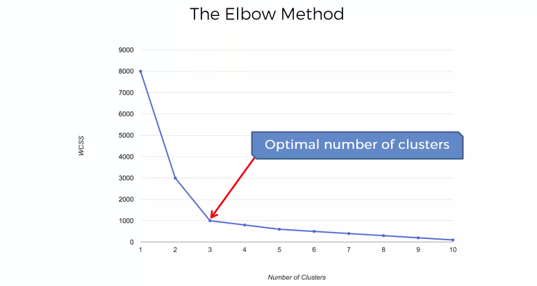

Code
import pandas as pd
import numpy as np
import matplotlib.pyplot as pltwith Mall Customers Datase
import pandas as pd
import numpy as np
import matplotlib.pyplot as plthttps://www.kaggle.com/datasets/shwetabh123/mall-customer
# Loading the data
dataset = pd.read_csv('./data/Mall_Customers.csv')
# Showing overview of the train dataset
dataset.head()| CustomerID | Genre | Age | Annual Income (k$) | Spending Score (1-100) | |
|---|---|---|---|---|---|
| 0 | 1 | Male | 19 | 15 | 39 |
| 1 | 2 | Male | 21 | 15 | 81 |
| 2 | 3 | Female | 20 | 16 | 6 |
| 3 | 4 | Female | 23 | 16 | 77 |
| 4 | 5 | Female | 31 | 17 | 40 |
The standard k-means algorithm isn’t directly applicable to categorical data, for various reasons. The sample space for categorical data is discrete, and doesn’t have a natural origin. A Euclidean distance function on such a space isn’t really meaningful. As someone put it, “The fact a snake possesses neither wheels nor legs allows us to say nothing about the relative value of wheels and legs.”
There’s a variation of k-means known as k-modes,if we need to include categorical data
So only get Annual Income (k$) and Spending Score (1-100).
x = dataset.iloc[:, [3, 4]].valuesx.size400x.shape(200, 2)from sklearn.cluster import KMeans
wcss = []#Iterating over 1, 2, 3, ---- 10 clusters
for i in range(1, 11):
kmeans = KMeans(n_clusters = i, init = 'k-means++', max_iter = 300, n_init = 10, random_state = 0)
kmeans.fit(x)
wcss.append(kmeans.inertia_) # intertia_ is an attribute that has the wcss numberplt.plot(range(1,11), wcss)
plt.title("Elbow method applied to Mall_customers dataset")
plt.xlabel("number of clusters")
plt.ylabel("wcss")
plt.show()

# Apply kmeans to the dataset
kmeans = KMeans(n_clusters = 5, max_iter = 300, init = 'k-means++', n_init = 10, random_state = 0)
y_kmeans = kmeans.fit_predict(x) #predict which cluster each point belongs to
y_kmeansarray([3, 4, 3, 4, 3, 4, 3, 4, 3, 4, 3, 4, 3, 4, 3, 4, 3, 4, 3, 4, 3, 4,
3, 4, 3, 4, 3, 4, 3, 4, 3, 4, 3, 4, 3, 4, 3, 4, 3, 4, 3, 4, 3, 0,
3, 4, 0, 0, 0, 0, 0, 0, 0, 0, 0, 0, 0, 0, 0, 0, 0, 0, 0, 0, 0, 0,
0, 0, 0, 0, 0, 0, 0, 0, 0, 0, 0, 0, 0, 0, 0, 0, 0, 0, 0, 0, 0, 0,
0, 0, 0, 0, 0, 0, 0, 0, 0, 0, 0, 0, 0, 0, 0, 0, 0, 0, 0, 0, 0, 0,
0, 0, 0, 0, 0, 0, 0, 0, 0, 0, 0, 0, 0, 1, 2, 1, 0, 1, 2, 1, 2, 1,
0, 1, 2, 1, 2, 1, 2, 1, 2, 1, 0, 1, 2, 1, 2, 1, 2, 1, 2, 1, 2, 1,
2, 1, 2, 1, 2, 1, 2, 1, 2, 1, 2, 1, 2, 1, 2, 1, 2, 1, 2, 1, 2, 1,
2, 1, 2, 1, 2, 1, 2, 1, 2, 1, 2, 1, 2, 1, 2, 1, 2, 1, 2, 1, 2, 1,
2, 1], dtype=int32)#visualizing the clusters
plt.figure(2)
# define group
plt.scatter(x[y_kmeans == 0, 0], x[y_kmeans == 0, 1], s = 50, c = 'red', label = 'Customer 1')
plt.scatter(x[y_kmeans == 1, 0], x[y_kmeans == 1, 1], s = 50, c = 'blue', label = 'Customer 2')
plt.scatter(x[y_kmeans == 2, 0], x[y_kmeans == 2, 1], s = 50, c = 'green', label = 'Customer 3')
plt.scatter(x[y_kmeans == 3, 0], x[y_kmeans == 3, 1], s = 50, c = 'cyan', label = 'Customer 4')
plt.scatter(x[y_kmeans == 4, 0], x[y_kmeans == 4, 1], s = 50, c = 'purple', label = 'Customer 5')
# center
plt.scatter(kmeans.cluster_centers_[:, 0], kmeans.cluster_centers_[:, 1], s = 300, c = 'yellow', label = 'centroids' )
# _centers_ --> also an attribute that can be accessed.
# s --> size of each point
plt.title("K-means clustering applied to Mall_Customers")
plt.xlabel('Annual Income ($)')
plt.ylabel('Spending score (1-100)')
plt.legend()
#plt.show()
dataset['group_no']=y_kmeans.astype(str)dataset.shape(200, 6)list(dataset)['CustomerID',
'Genre',
'Age',
'Annual Income (k$)',
'Spending Score (1-100)',
'group_no']from plotnine import *
p=(
ggplot(data=dataset)+aes(x='Annual Income (k$)',y='Spending Score (1-100)')+ geom_point(aes(color="group_no"))
)
p
get Annual Income (k$) and Spending Score (1-100) and Age
x = dataset[['Age', 'Annual Income (k$)', 'Spending Score (1-100)']].to_numpy()
len(x)200x.size600from sklearn.cluster import KMeans
wcss = []#Iterating over 1, 2, 3, ---- 10 clusters
for i in range(1, 11):
kmeans = KMeans(n_clusters = i, init = 'k-means++', max_iter = 300, n_init = 10, random_state = 0)
kmeans.fit(x)
wcss.append(kmeans.inertia_) # intertia_ is an attribute that has the wcss numberSo adding age make small impact into overall clusting
plt.plot(range(1,11), wcss)
plt.title("Elbow method applied to Mall_customers dataset")
plt.xlabel("number of clusters")
plt.ylabel("wcss")
plt.show()
# Apply kmeans to the dataset
kmeans = KMeans(n_clusters = 5, max_iter = 300, init = 'k-means++', n_init = 10, random_state = 0)
y_kmeans = kmeans.fit_predict(x) #predict which cluster each point belongs to
y_kmeansarray([0, 3, 0, 3, 0, 3, 0, 3, 0, 3, 0, 3, 0, 3, 0, 3, 0, 3, 0, 3, 0, 3,
0, 3, 0, 3, 0, 3, 0, 3, 0, 3, 0, 3, 0, 3, 0, 3, 0, 3, 0, 3, 0, 3,
0, 3, 2, 2, 2, 2, 2, 2, 2, 2, 2, 2, 2, 2, 2, 2, 2, 2, 2, 2, 2, 2,
2, 2, 2, 2, 2, 2, 2, 2, 2, 2, 2, 2, 2, 2, 2, 2, 2, 2, 2, 2, 2, 2,
2, 2, 2, 2, 2, 2, 2, 2, 2, 2, 2, 2, 2, 2, 2, 2, 2, 2, 2, 2, 2, 2,
2, 2, 2, 2, 2, 2, 2, 2, 2, 2, 2, 2, 2, 1, 4, 1, 2, 1, 4, 1, 4, 1,
4, 1, 4, 1, 4, 1, 4, 1, 4, 1, 2, 1, 4, 1, 4, 1, 4, 1, 4, 1, 4, 1,
4, 1, 4, 1, 4, 1, 4, 1, 4, 1, 4, 1, 4, 1, 4, 1, 4, 1, 4, 1, 4, 1,
4, 1, 4, 1, 4, 1, 4, 1, 4, 1, 4, 1, 4, 1, 4, 1, 4, 1, 4, 1, 4, 1,
4, 1], dtype=int32)#visualizing the clusters
plt.figure(2)
# define group
plt.scatter(x[y_kmeans == 0, 0], x[y_kmeans == 0, 1], s = 50, c = 'red', label = 'Customer 1')
plt.scatter(x[y_kmeans == 1, 0], x[y_kmeans == 1, 1], s = 50, c = 'blue', label = 'Customer 2')
plt.scatter(x[y_kmeans == 2, 0], x[y_kmeans == 2, 1], s = 50, c = 'green', label = 'Customer 3')
plt.scatter(x[y_kmeans == 3, 0], x[y_kmeans == 3, 1], s = 50, c = 'cyan', label = 'Customer 4')
plt.scatter(x[y_kmeans == 4, 0], x[y_kmeans == 4, 1], s = 50, c = 'purple', label = 'Customer 5')
# center
plt.scatter(kmeans.cluster_centers_[:, 0], kmeans.cluster_centers_[:, 1], s = 300, c = 'yellow', label = 'centroids' )
# _centers_ --> also an attribute that can be accessed.
# s --> size of each point
plt.title("K-means clustering applied to Mall_Customers")
plt.xlabel('Annual Income ($)')
plt.ylabel('Spending score (1-100)')
plt.legend()
#plt.show()
dataset['group_no']=y_kmeans.astype(str)list(dataset)['CustomerID',
'Genre',
'Age',
'Annual Income (k$)',
'Spending Score (1-100)',
'group_no']from plotnine import *
p=(
ggplot(data=dataset)+aes(x='Annual Income (k$)',y='Spending Score (1-100)')+ geom_point(aes(color="group_no"))
)
p
from plotnine import *
p=(
)
p()from plotnine import *
p=(
ggplot(data=dataset)+aes(x='group_no',y='Spending Score (1-100)',fill="group_no")+geom_boxplot()
)
p
from plotnine import *
p=(
ggplot(data=dataset)+aes(x='group_no',y='Age',fill="group_no")+geom_boxplot()
)
p
https://www.kaggle.com/code/sangwookchn/clustering-techniques-using-scikit-learn